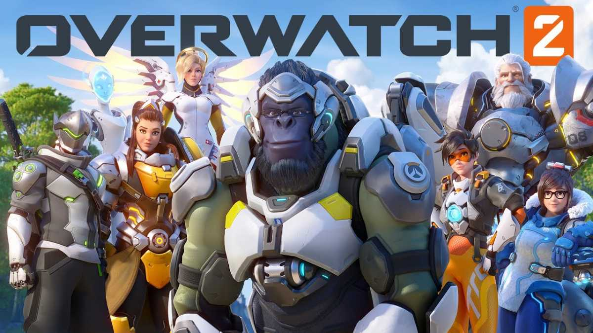

Overwatch2

Overwatch adalah game berbasis tim online yang umumnya dimainkan sebagai penembak orang pertama . Gim ini memiliki beberapa mode gim yang berbeda, pada prinsipnya dirancang di sekitar pertempuran berbasis skuad dengan dua tim lawan masing-masing enam pemain. Pemain memilih salah satu dari lebih dari dua lusin karakter pahlawan yang dibuat sebelumnya dari salah satu dari tiga jenis kelas: Pahlawan kerusakan yang memberikan sebagian besar kerusakan untuk menyerang atau mempertahankan titik kontrol, pahlawan Tank yang dapat menyerap kerusakan dalam jumlah besar, dan pahlawan Dukungan yang memberikan penyembuhan atau buff lain untuk rekan satu tim mereka.Setiap pahlawan memiliki perlengkapan keterampilan unik, yang menentukan atribut intrinsik mereka seperti poin kesehatandan kecepatan lari, serangan utama mereka, beberapa skill aktif dan pasif, dan kemampuan ultimate yang hanya dapat digunakan setelah diisi dengan memberikan damage pada musuh dan menyembuhkan sekutu. Pemain dapat mengubah pahlawan mereka selama pertandingan, sebagai tujuan Overwatch 's desain adalah untuk mendorong komposisi tim yang dinamis yang beradaptasi dengan situasi. Genre permainan telah digambarkan oleh beberapa jurnalis sebagai " penembak pahlawan ", karena desainnya di sekitar pahlawan dan kelas tertentu.untuk Overwatch2 menyertakan mode multiplayer koperasi pemain versus lingkungan (PvE) baru. Selain itu, ini akan memiliki lingkungan multipemain kompetitif bersama, memungkinkan pemain dari kedua game untuk bermain melawan satu sama lain. Meskipun akan dijual sebagai game terpisah, pahlawan baru, peta, dan gamemode kompetitif juga akan ada di Overwatch .
Marvel avengers

Marvel's Avengers adalah game aksi-petualangan orang ketiga yang menggabungkan kisah sinematik orisinal dengan gameplay pemain tunggal dan kooperatif. Game ini dapat dimainkan secara offline sebagai pengalaman pemain tunggal atau daring dengan hingga empat orang selama aspek-aspek tertentu game. Game ini akan menampilkan opsi penyesuaian termasuk kemampuan dan kostum, yang dapat ditingkatkan menggunakan pohon keterampilan . Kostum diambil dari "semua penjuru dunia Marvel" dan bisa diperoleh dalam game atau dibeli secara terpisah sebagai DLC. Pemain juga dapat menerima pembaruan gratis yang berisi wilayah dan karakter baru.
fall guys

Game Hingga 60 pemain bersaing dalam pertandingan dengan gameplay bergaya battle royale . Pemain , direpresentasikan sebagai figur seperti jellybean, bergerak di sekitar lapangan bermain tiga dimensi, dengan gerakan tambahan seperti melompat, meraih / memanjat, atau menyelam untuk membantu gameplay. Tujuannya adalah untuk lolos ke babak berikutnya dengan menyelesaikan setiap mini-game yang dipilih secara acak . Mini-game tertentu melibatkan berlari menuju garis finis di ujung peta, sementara yang lain menambahkan elemen kerja tim. Pada setiap mini-game, rintangan muncul di sekitar peta untuk menambah kerumitan. Pemain yang terlalu lambat atau yang gagal memenuhi persyaratan tertentu untuk mini-game dieliminasi. Di babak final, beberapa pemain yang tersisa bersaing di pertandingan final dengan mini-game acak yang dirancang untuk ukuran pemain yang lebih kecil. Pemenang pertandingan adalah pemain terakhir yang bertahan .
Ghost of tsushima
Ghost of Tsushima adalah gim siluman aksi-petualangan yang dimainkan dari sudut pandang orang ketiga . Menampilkan dunia terbuka yang luas, tidak ada titik jalan dan dapat dijelajahi tanpa panduan. Pemain dapat melakukan perjalanan ke berbagai belahan dunia dengan menunggang kuda. Item yang berfungsi sebagai pengait tersedia untuk mengakses area yang sulit dijangkau. Game ini menampilkan misi sampingan dan karakter yang tidak dapat dimainkan yang dapat berinteraksi dengan pemain.
Pemain dapat terlibat dalam konfrontasi langsung dengan musuh menggunakan senjata seperti tachi , yang juga dapat digunakan untuk merantai serangkaian serangan fatal setelah menyorot musuh tertentu. Sebagai alternatif, menggunakan stealth memungkinkan untuk menghindari musuh dan menyerang mereka secara diam-diam dengan alat seperti petasan untuk membuat gangguan, bom asap untuk disorientasi musuh yang disiagakan, dan kunai untuk menyerang banyak musuh. Duel satu lawan satu dengan karakter yang tidak dapat dimainkan adalah opsional.
Tidak seperti kebanyakan game lainnya, tingkat kesulitan tertinggi, "Lethal", bukanlah kesulitan yang sangat sulit untuk ditebas musuh. Sebaliknya, ini adalah mode yang lebih realistis di mana pemain dan musuh melakukan kerusakan besar satu sama lain, dengan semua pertarungan non-bos berakhir dengan 1 atau 2 pemotongan yang berhasil. Ini telah dipuji oleh berbagai pengulas, dan telah dicatat secara mendasar mengubah cara permainan itu dimainkan.
Mode multiplayer berjudul Legends akan dirilis pada akhir tahun 2020. Pemain dapat menyelesaikan misi cerita berdasarkan mitologi Jepang dengan pemain lain. Mode gerombolan, di mana pemain melawan gelombang musuh, juga akan tersedia untuk grup yang terdiri dari empat pemain. Sebuah serangan direncanakan akan ditambahkan pasca Legends peluncuran.